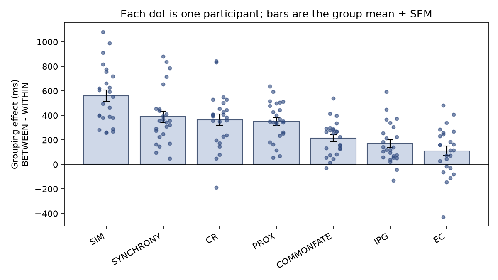

Reading & Writing Analysis Scripts with Real Data
Do grouping cues change how fast people see a repeated shape?
25 real participants from the lab's GGP study.
Keys: → next · ← back · R reference view · F fullscreen
Today's plan
| Time | What |
|---|---|
| 0:00 | Set up in Colab |
| 0:03 | Part 0 · The study in 3 minutes |
| 0:06 | Part 1 · Reading code: predict, then run |
| 0:13 | Part 2 · Bring in many files |
| 0:20 | Part 3 · Look before you analyze |
| 0:28 | Part 4 · Clean the data, and keep a log |
| 0:33 | Part 5 · The grouping effect, one participant at a time |
| 0:41 | Part 6 · Find the bugs |
| 0:49 | Part 7 · From notebook to script; how robust is the answer? |
Workshop 1 was fake data with planted problems. Today the problems are real, and nobody planted them.
Get set up
- Open the notebook: Colab link → Run anyway if asked.
- File → Save a copy in Drive. The tab should say "Copy of…"
- Run the SETUP cell. It downloads the data (~10 s). 👍 when it prints
Data folder: …
These are real people's data. IDs are new random codes, age and sex were removed. Keep the files inside the workshop: don't share or post them.
New today: 🔮 Predict cells. Write your guess in the comment before running. Being wrong is useful: it shows you which line you misread.
The Repetition Discrimination Task

9 shapes alternate, except one pair repeats. Which shape repeated? Press a key, fast.
The prediction
A grouping cue splits the row into pairs:
- PROX closer together · SIM same color
- CR inside a box · EC joined by a bar
- COMMONFATE move together · SYNCHRONY flicker together
- IPG shared flankers · NEUTRAL no cue
WITHIN: repeated pair inside one group.
BETWEEN: split across two groups.
Repetitions are easier to see inside a group, so:
effect = RTBETWEEN − RTWITHIN > 0
Predict, then run
trials = [
{"cue": "PROX", "wbn": "WITHIN", "correct": 1, "rt": 0.81},
{"cue": "PROX", "wbn": "BETWEEN", "correct": 1, "rt": 1.20},
{"cue": "PROX", "wbn": "WITHIN", "correct": 0, "rt": 0.65},
{"cue": "PROX", "wbn": "BETWEEN", "correct": 1, "rt": 1.05},
]
within, between = [], []
for trial in trials:
if trial["correct"] == 0:
continue # skip to the next trial
if trial["wbn"] == "WITHIN":
within.append(trial["rt"])
else:
between.append(trial["rt"])Before running: what is in within? In between?
Answer
within = [0.81], between = [1.2, 1.05]. The third trial was an error, so continue skipped it.
Functions: inputs → output
def mean(values):
"""Average of a list of numbers."""
return sum(values) / len(values)
effect = mean(between) - mean(within) # TODO
print(f"Grouping effect: {effect * 1000:.0f} ms")defnames a recipe;valuesis its input;returnhands back the result.- Real analysis scripts are a handful of functions called in order.
The answer is 315 ms, not 395 ms. Why? Why do we leave errors out of an RT analysis?
Answer
395 ms would include the error trial (0.65 s) in WITHIN. An error RT measures something else (a guess, a slip), not how fast the repetition was seen.
One file per participant → one table
files = sorted(DATA_DIR.glob("RDTdata_*.csv")) # every file that fits the pattern
tables = []
for path in files:
one = pd.read_csv(path, dtype={"subjectId": str})
subject = path.stem.split("_")[1] # "RDTdata_102" -> "102"
if subject == "999" or len(one) == 0: # debug ID, or an empty file
continue
tables.append(one)
df = pd.concat(tables, ignore_index=True) # stack themThere are 26 files for 25 participants. Which one is extra, and what is it for?
Answer
RDTdata_999.csv: ID 999 is reserved for debugging (lab rule: 1–100 pilots, 999 debug, 101+ real). It has 0 trials. Analysis code drops 999 by ID, so a test run can never sneak into a result.
IDs are text, not numbers
pd.Series(["007", "101"]).astype(int).tolist() # -> [7, 101]- Read as a number,
"007"becomes7, and no longer matches its file name. dtype={"subjectId": str}keeps IDs exactly as typed.- Excel does the same thing silently when it saves a CSV. Don't open data files in Excel and save them.
path.stem.split("_")[1] is three steps. What does each give for RDTdata_102.csv?
Answer
.stem → "RDTdata_102" (name without .csv) · .split("_") → ["RDTdata", "102"] · [1] → "102".
Count before you compute
n_trials = df.groupby("subjectId").size()
n_trials.value_counts() # 720 trials: 22 people · 1200 trials: 3 people
n_trials[n_trials > 720] # TODO: who are they?Three participants ran 5 blocks instead of 3 (early pilots, before the task was shortened). Options: keep everything? Drop them? Keep their first 3 blocks?
What the lab does
Keep blocks 1–3 for everyone. Then everyone did the same task, with the same amount of practice and fatigue. Dropping them wastes good data; keeping all 5 blocks gives them more weight and more practice than everyone else.
Look at the extremes
df["rt"].describe() # min -1.152 s ... max 64.785 s
df[df["rt"] < 0.2] # five very fast trials| subjectId | block | trial | cueType | ac | rt |
|---|---|---|---|---|---|
| 768 | 3 | 1 | PROX | 0 | −0.9357 |
| 921 | 3 | 121 | SIM | 0 | −1.1520 |
A negative RT? Both are right after a "press space" screen (trial 1, and trial 121 = after the halfway break). What happened?
Answer
The participant pressed a response key (n/m) while the break screen was up. The experiment never emptied the key buffer, so that old press became the answer to the next trial, timestamped before the trial's clock started. It's a bug in the experiment, not in the person. Workshop 6 fixes it. And 65 s? Someone looked away from the screen for a minute.
Check each person
first3 = df[df["block"] <= 3]
per_person = pd.DataFrame({
"accuracy": first3.groupby("subjectId")["ac"].mean(),
"share_slower_than_5s": (first3["rt"] > 5).groupby(first3["subjectId"]).mean(),
})
per_person.sort_values("accuracy").head()| subjectId | accuracy | slower than 5 s |
|---|---|---|
| 726 | 0.829 | 0.240 |
| 768 | 0.868 | 0.039 |
| 370 | 0.869 | 0.000 |
Exclude 726? Chance is 50%. Decide your rule now, before you see anyone's grouping effect.
Settings at the top, a log for every step
N_BLOCKS = 3
MIN_ACCURACY = 0.80
MIN_RT = 0.2 # seconds
MAX_RT = 5.0 # seconds
clean = clean[(clean["rt"] >= MIN_RT)
& (clean["rt"] <= MAX_RT)]
log.append(("RT window", len(clean),
clean["subjectId"].nunique()))| step | trials left | people |
|---|---|---|
| blocks 1–3 | 18,000 | 25 |
| accuracy rule | 18,000 | 25 |
| correct trials | 17,148 | 25 |
| RT window | 16,726 | 25 |
& = AND, | = OR, ~ = NOT. Each condition needs its own brackets.
What share of trials did we lose (7.1%)? Which step removed the most? Would one person losing far more than the others worry you?
groupby → unstack → subtract
means = clean.groupby(["subjectId", "cueType", "wbn"])["rt"].mean() # person x cue x wbn
means = means.unstack("wbn") # wbn values become columns
means["effect_ms"] = (means["BETWEEN"] - means["WITHIN"]) * 1000
effects = means["effect_ms"].unstack("cueType").dropna(axis=1, how="all")| BETWEEN | WITHIN | ||
|---|---|---|---|
| 102 | CR | 1.916 | 1.508 |
| PROX | 1.408 | 1.227 | |
| SIM | 1.679 | 1.278 | |
| CR | PROX | SIM | |
|---|---|---|---|
| 102 | 408 | 181 | 401 |
| 123 | 197 | 164 | 379 |
| … |
Left: means for one person. Right: effects, one row per person, one column per cue (ms).
What we found

Read it
Every cue groups: all effects are above 0. SIM is strongest (559 ms, 25/25 participants). EC is weakest (111 ms) and only 18 of 25 people show it. The bar alone hides that.
Why one number per person first?
What would go wrong if we averaged all 16,726 trials at once?
Answer
- Weights. People with more kept trials (fast, accurate, or the 5-block pilots before trimming) would count more.
- Error bars. The SEM would pretend we have 16,726 independent observations. We have 25 people. The question is about people, so the sample is people.
It runs. It's wrong. Find 3 bugs.
def buggy_analysis(df):
keep = df[df["block"] < 3]
keep = keep[keep["ac"] == 1]
keep = keep[(keep["rt"] >= 0.2) | (keep["rt"] <= 5.0)]
means = keep.groupby(["subjectId", "cueType", "wbn"])["rt"].mean().unstack("wbn")
means["effect_ms"] = (means["WITHIN"] - means["BETWEEN"]) * 1000
...Don't hunt for "wrong-looking code". Check what each step produces: len(keep), keep["rt"].max(), the sign of the result.
The 3 bugs, and a check for each
| Bug | Symptom | Check that catches it |
|---|---|---|
< 3 keeps blocks 1–2 | 11,322 trials, not 16,726 | assert keep["block"].max() == 3 |
| (OR) keeps every RT | slowest RT kept: 36 s | assert keep["rt"].between(0.2, 5).all() |
| WITHIN − BETWEEN | every effect negative | compare with the prediction |
Only bug 3 flips the conclusion. Bugs 1 and 2 change the numbers quietly, which is why they're worse: nobody looks twice.
Anatomy of an analysis script
- Header: what it does, how to run it, what it reads and writes.
- Settings: every decision, with its unit and why.
- One function per step: load, clean, effects, summarize, plot. Each has a docstring.
main()calls them in order and saves toprettydata/andfigtree/.
MIN_RT = 0.2 # seconds; faster than this
# is a press before the display
# was seen
MAX_RT = 5.0 # seconds; slower = attention
# wandered (the lab's cutoff)Open rdt_analysis.py and find each Part of today in it.
Same data, another reasonable cutoff
!python {SCRIPT} # MAX_RT = 5 s
!python {SCRIPT} --max-rt 2 # MAX_RT = 2 s| Cutoff | SIM | SYNCHRONY | CR | PROX | COMMONFATE | IPG | EC |
|---|---|---|---|---|---|---|---|
| 5 s | 559 | 390 | 364 | 351 | 215 | 169 | 111 |
| 2 s | 302 | 200 | 100 | 229 | 155 | 114 | 78 |
Every effect shrinks, and CR drops from 3rd to 6th. Why would cutting slow trials shrink the effect? What should a paper report?
Answer
Slow trials are mostly BETWEEN trials (the hard ones), (69% of the kept trials slower than 2 s), so cutting them removes the biggest differences. Both cutoffs are defensible. Choose it before seeing results, report it, and show that the main conclusion holds either way (here: every cue still groups; the ranking does not hold).
Five habits
- Count before you compute: files, participants, trials, blocks.
- Look at the extremes: an impossible value is a clue about the experiment.
- Decide rules before results, and log what each one removes.
- One number per person first, then across people.
- Bugs rarely crash. Check what each step produces; write
asserts.
⭐ Stretch in the notebook: the effect in accuracy, split-half reliability, and a NEUTRAL baseline.
Cheat sheet
| You want to… | Code |
|---|---|
| find files by pattern | sorted(folder.glob("RDTdata_*.csv")) |
| read a CSV, IDs as text | pd.read_csv(path, dtype={"subjectId": str}) |
| stack tables | pd.concat(list_of_tables, ignore_index=True) |
| rows per group | df.groupby("subjectId").size() |
| how often each value | series.value_counts() |
| summary of a column | df["rt"].describe() |
| keep rows (AND / OR / NOT) | df[(a) & (b)] · df[(a) | (b)] · df[~a] |
| in a list of values | df["subjectId"].isin(ids) |
| mean per person × condition | df.groupby(["subjectId", "wbn"])["rt"].mean() |
| a level into columns | .unstack("wbn") |
| drop all-empty columns | .dropna(axis=1, how="all") |
| mean, SEM, count | .mean() · .sem() · .count() |
| stop if something is wrong | assert condition, "message" |
| run a script from a notebook | !python script.py --max-rt 2 |
Common errors
| You see | Usually means |
|---|---|
NameError: name 'df' is not defined | An earlier cell wasn't run. Runtime → Run before. |
KeyError: 'rt ' | The column name is spelled differently (spaces, capitals). Check df.columns. |
TypeError: unsupported operand … 'str' | A blank ___ is still there, or a number column was read as text. |
ValueError: The truth value of a Series is ambiguous | Used and/or on columns. Use &/| and brackets. |
ValueError: No objects to concatenate | files is empty: wrong folder or pattern. Print DATA_DIR. |
Numbers come out as object, maths fails | An empty file (like 999) was stacked with the others. Skip empty files before concat. |
Setup cell: git clone fails | No internet in the runtime, or the repo isn't public yet. Tell the instructor. |
Workshop 6: the experiment side
Today's negative RTs came from the experiment code.
Next time: build trial matrices, time stimuli to the frame, and never lose data.
Materials: github.com/slopez4/RA_Workshops · solutions notebook